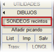
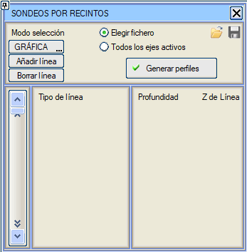
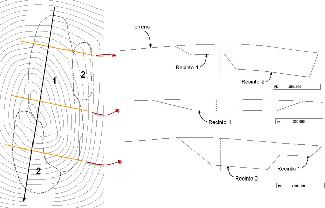
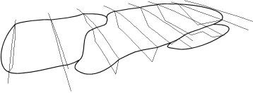

| |
|
ALANLARA GÖRE SONDAJLAR
|
YATAY GÜZERGAH → [APL. ve PROFİL] menüsünden erişilebilen bu alt menü, harita üzerine yerleştirilmiş kapalı alanlardan (poligonlardan) yola çıkarak bir arazi enkesit dosyasına jeolojik ve jeoteknik verileri dahil etmeye olanak tanır. Her çizgi tipi, sabit bir derinliği (bir izopak) veya her çizgi için bir Z kotunu tanımlar. 

Yüzeylerin buna göre tanımlanmasıyla, ISTRAM®/ISPOL®'ün herhangi bir aracıyla farklı malzemelerin hacimlerini hesaplamak mümkündür. Eğer bu işlemle oluşturulan yüzeye L66 tipi (sağlam zemin) atanırsa, sonuç dosyası, bitkisel toprak kalınlıkları çizilmiş olan doğal arazi enkesitlerini içerir. Bu enkesitler arazi olarak kullanıldığında, bölümlendirme tablosunda beyan edilen kalınlıklar yerine bu kalınlıklar kullanılacaktır. Tüm aktif eksenler seçeneği etkinleştirildiğinde, alanlara göre sondajlar tüm aktif eksenlerin arazi enkesit dosyalarına aynı anda dahil edilir. Derinliği almak yerine kotlarıyla birlikte alanları kullanmak, alanların çizgileriyle yeni bir yüzey tanımlamak gibidir; bu yüzey, enkesitleri kestiğinde, tanımlanmadığı yerlerde arazi yüzeyiyle tamamlanır. |